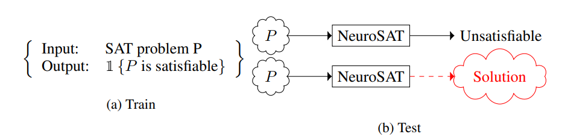
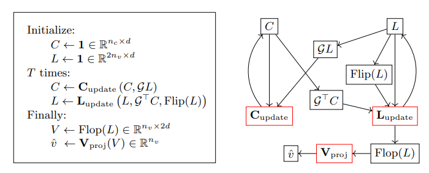
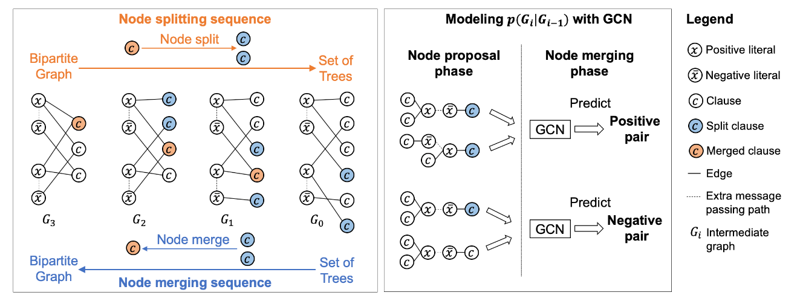
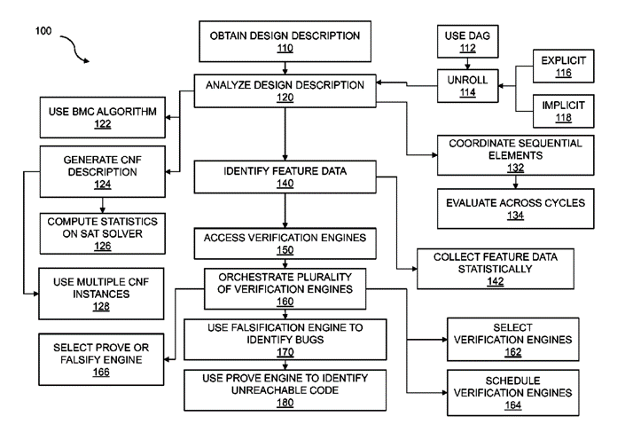
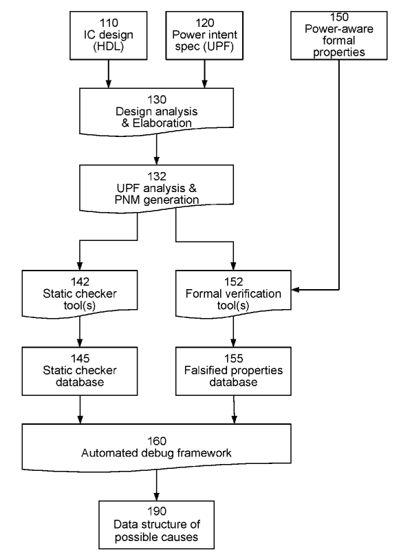

AI4Verification
Many EDA applications can be abstracted into SAT problems and then directly call the SAT solver to solve them, including Model Checking (MC), Logic Synthesis, Logic Equivalence Checking (LEC), Automatic Test Pattern Generation (ATPG), etc. However, high-performance SAT solvers are often not equivalent to the fact that the actual EDA problem can be solved efficiently. The reasons include high-quality coding (modeling) methods in complex constraint scenarios, solution-friendly simplification methods, and data-matched Solver or solution algorithm selection, etc.
成员介绍
All of us are working on SAT-related algorithms in EDA, such as Automatic Test Pattern Generation (ATPG), Logic Equivalence Checking (LEC), Model Checking (MC). We all focus on both modeling and solving in practice.SAT in Industrial EDA Problems
Boolean Satisfiability (or called SAT for short) is the problem of determining if there exists an interpretation that satisfies a given Boolean formula. In other words, it asks whether the variables of a given Boolean formula can be consistently replaced by the values TRUE or FALSE in such a way that the formula evaluates to TRUE. If this is the case, the formula is called satisfiable, otherwise, it is unsatisfiable. Modern SAT solver depends on Conflict-driven Clause Learning (CDCL) algorithm.

Before 2012: Several research has been done on circuit SAT as well as the combination between ATPG and SAT. ATPG has shown certain advantage on solving sequential equivalence checking during the requirement-driven searching strategy and activity-based modeling method. In MC, word-level research has started. Intel has proposed a commerial ATPG engine with SAT-reasoning module. In ATPG, PASSAT has been proposed which enables the SAT-based ATPG in industrial applications. In LEC, bundle method (an incremental LEC method) has been proved the better efficiency. There are two major events: 1) one is that the SAT competition began to be normalized and is held every year after 2002; 2) the other one is that there is the first patent (as far as our knowledge) for data-driven LEC engine, and it is worth mentioning that the improved data-driven LEC architectur has appeared in the Formality's white paper in 2021.
2013-2018: 1. Cube-and-conquer was proposed for SAT solving: based on this framework, the performance of parallel proofs on some data is better than serial ones; 2. More and more improvement of SAT-based proofs focuses on encoding. 3. Algebra and theory proving has began to be used in the LEC of datapath circuit, especially for proving multiplier. 4. More learning-based proof schemes have been proposed in LEC and MC: a) Adaptive scheme selection has become a general pipeline in many patents and white paper. b) For hard bug finding cases, reinforcement learning and MDP methods have been utilized for path finding. It is worth mentioning that the first learning-based SAT solver network, or called NeuroSAT, has been proposed. The basic network consists of two parts, a GNN-based network to get the representation vector, and a classifier to predict. Its aim is to predict whether the problem is SAT or UNSAT. After that, most of the learning-aided SAT solvers follow this architecture.
From 2019 to now: More and more researches are conducted on data augmentation . The key insight is to improve the quality of trained model by improving data diverity and sample complexity. More white papers on industrial verification tool, such as conformal and vso.ai, has claimed the effect of learning methods. Reverse engineering has been utilized in LEC, aiming to improve the proof efficiency of datapath circuit. Kissat has won the SAT competition in 2020. From then on, more and more SAT solvers follow Kissat's architectur. In 2022, the golden SAT solver has used bandit for algorithm selection based on the data structure of the original Kissat.
On the one hand, SAT solvers are continuously improving their performance. The latest SAT solvers try to infer possible circuit structure information in CNF, thereby enhancing the correctness of decision-making. SAT solvers serve as the basic engines in industrial EDA, such as ATPG, LEC, MC, routing, etc. This is partly due to the efficiency of symbolic computation in dealing with NP-hard problems, especially the efficient reasoning between Boolean variables.
On the other hand, The SAT problem is completely different from the domain of the EDA problem. The latter is defined on the circuit and often has scene-specific constraints, such as the diagnosis resolution and compression-aware considered in ATPG. In MC, it is often necessary to know the situation of each PO. If it is not found that a PO is unsafety (that is, corresponding to the SAT problem), the solution will be exited. Two bottlenecks often happen in SAT's applications in industrial EDA. 1) Modeling time cost much. Take ATPG as an example, the transformation time from circuit to CNF is usually longer than solving time. 2) Low reasoning efficiency due to the learning-from-mistakes framework. A lot of structural information is too difficult to embed in symbolic expressions. In the research of SAT community, a very important direction is to introduce structural information into expressions through means such as simulation (on RTLIL or netlist) in the early stage.
We have summarized several problems that an efficient SAT-based solution may face, if you are also interested in these problems, welcome to email us.

- Effective modeling. We aim at "effective", not only efficient, the reason lies in the possible loss of structural information of SAT boolean formulas. In this problem, we mainly consider how to preserve the structural properties of the circuit itself, and further effectively identify the implicit constraints that correctly define the search space and put them into the model.
- Adaptive preprocessing. There is an underlying assumption here that, in a general-purpose solver, a smaller model usually means a relatively higher probability of being efficiently proved UNSAT, or finding a set of legal assignments. Therefore, we always hope to add a suitable pre-solution module between modeling and solving. Neither will it bring a performance burden due to additional calculations, nor will it limit the accuracy of decision-making due to the size of the model. Especially in Model Checking, we found that efficient latch correspondece or retiming and speculation technologies can always relieve the pressure of state explosion to a certain extent, thereby improving the proof or solution performance.
- Adaptive distributed solving scheme. From the perspective of the SAT community, the performance of the SAT solver itself is greatly improved every year. However, in industrial practice, we do find that the solution performance is not always equivalent to the ranking of the SAT competition, and different problems always have their own solvers. How to efficiently use different solvers to complete adaptive parallel or distributed systems is an important problem to be solved urgently. Furthermore, for a hard case, if any single solver cannot solve it, how to complete an efficient portfolio strategy through information interaction between different solvers is our top priority.
- Efficient simulation. Here we assume that we always carry out the proof flow from a high-level language to a mathematical/boolean expression. How to obtain important semantic information from higher-level models (such as RTLIL or netlist) and efficiently use semantic information to complete decision-making and search is one of the important research directions.
- Effective data augmentation. We certainly believe that AI can contribute to the solution and proof of SAT. However, we also admit that the current stable application of AI to industrial scenarios faces many challenges such as stability and generalization. How to improve the quality of the current training data through data augmentation , so as to improve sample complexity and enhance generalization, is the first problem to be solved. Many people have already begun to pay attention to this direction. But from the perspective of SAT, the biggest problem we need to face is that the similarity of the model does not match the similarity of the solution space . That is to say, we can cite many examples to prove that even if the similarity of the two models has exceeded 99% (for example, only one constraint is inconsistent among the variables of tens of millions of scales), they can be a SAT problem, an UNSAT problem, and a It only takes 10 seconds to solve, while one takes more than 20,000 seconds. How to define an effective measurement to determine the similarity is a priority problem to be solved here.
- Pretrained model. In order to maximize the use of expert knowledge and data, we care whether there can be a pre-trained model to enhance the infrastructure in the current AI-based framework. If possible, we can migrate to different tasks through incremental training in the future, which not only effectively shortens the training time, but also completes information fusion in different directions through the model to make up for the short-sightedness and limitations of expert knowledge in local directions.
- Efficient online fine-tuning techniques. From the perspective generalization, we would like to further enhance the generalization by combining online fun-tuning, so as to improve the prediction accuracy of the model in different scenarios. We consider the appropriate fine-tuning indicators, efficient fine-tuning technology, etc.
Recent Progress
Survey
- The first learning-aided SAT solver, NeuroSAT , has been proposed in 2018. Its core is a message passing neural network that learns to solve SAT problems after only being trained as a classifier to predict satisfiability. The trained network learns to detect the contradictions instead of searching for satisfying assignments. When the number of variables involved in the contradiction is small relative to the total number of variables, knowing which variables are involved in the contradiction can enable constructing a resolution proof more efficiently. 
- The generalized form, NeuroCore , is trained to predict the unsatisfiable cores of UNSAT problems. The predicted results, how likely the variables are to appear in an unsatisfiable core, are periodically used to replace the variable activity scores in SAT solvers. 
- Reinforcement learning has been first utilized for improving SAT in Graph-Q-SAT . It uses a graph representation of SAT problems similar as NeuroSAT, which provides permutation and variable relabeling invariance. The update process is based on a trained DQN, which is a value-based RL algorithm that approximates an optimal Q-function. Hereby, the action-value function is used to estimate the sum of future rewards after taking an action a in state s and following an optimal policy thereafter.
- Since 2021, many testing and verification products have been armed with AI methods, featuring machine learning technology and core formal technology enhancements. For example, Formality and Conformal both claim to use the data driven method to realize an adaptive distributed proof method based on multiple solvers. Jasergold claims to utlilize AI method to select and parameterize solvers to enable faster first-time proofs. Meanwhile, machine learning is used to optimize successive runs for regression testing, either on premises or in the cloud. But the solver is primarily viewed as a black box, without any adaptive processing of searching as well as decision methods inside the solver.
- The first implicit model that generates Boolean Satisfiability formulas which resemble instances that arise in real-world industrial settings has been present, Learning to generate SAT instance . It uses the unsupervised techniques to create new formulas by mimicking the structural properties of a given input formula. There are two phases. A Literal Incidence Graph (LIG) has been firstly constructed, and Generative Adversarial Network is trained to generate new LIGs that exhibit graph-theoretic properties similarly. Secondly, the generated graph is extracted to finding a minimal clique edge cover of the given graph, which we tackle efficiently using a greedy hill-climbing algorithm.
- To tackle with the large scale, G-SAT has been proposed. The key insight is that any bipartite graph can be generated by starting with a set of trees, and then applying a sequence of node merging operations over the nodes from one of the two partitions. As we merge nodes, trees are also merged, and complex bipartite structures begin to appear. In this manner, a set of input bipartite graphs (SAT formulas) can be characterized by a distribution over the sequence of node merging operations. The G2SAT is trained via such a process. 
- To further tackle with the difference between structural similary and searching path, our paper HardSATGEN has been submited to KDD-2023. The related experiments have been conducted on LEC, and more than 10% improvement on solving efficiency has been obtained. More details will be given after publishment.
- (Synopsys-2013)-Formal Verification Result Prediction. The first patent for data-driven algorithm selection and proving strategy order prediction. The feature is extracted from AIG data, clause graph as well as propagation features, learnt clause features, etc. The scheduling includes an order for executing the verification engines on a specific design problem where the order may be determined based on the feature data. 
- (Intel-1999)- Method and apparatus for scan design using a formal verification based process. The key point here is that ATPG works as a basic engine for model checking. The whole method also includes reading one or more vector generation targets, and performing word-level ATPG justification on the control logic component to obtain a control logic solution. The method further includes extracting one or more arithmetic functions for the datapath logic component based on the control logic Solution, and solving the one or more arithmetic functions using a modular constraint solver.
- (Synopsys-2021)- Accelerate formal property verification across design versions using sequential equivalence checking (SEC) . Using SEC techniques to improve formal property verification. Smart decomposition is conducted and the proving is in an incremental manner. Order is designed in proving different properties, for making most use of semantic information.
- (Synopsys-2021)- Automated debug of falsified power-aware formal properties using static checker results. A power intent specification specifies the desired power intent for a design of an integrated circuit , for example the states of the power domains under different conditions . Power-aware formal properties describe desired behaviors specified by the power intent specification. In addition, a debug context database contains debug contexts for static-check violations resulting from power-aware static checking of the design. Static checking checks for compliance with the power intent specification based on a static structure of the design. 

Publication
Some of our works on optimization techniques and AI-related methods.
Optimization for Industrial EDA:
- Accelerate sat-based atpg via preprocessing and new conflict management heuristics
Junhua Huang, Hui-Ling Zhen, Naixing Wang, Mingxuan Yuan, Hui Mao, Yu Huang, Jiping Tao
ASP-DAC 2021 | paper - Conflict-driven Structural Learning Towards Higher Coverage Rate in ATPG
Hui-Ling Zhen, Naixing Wang, Junhua Huang, Xinyue Huang, Mingxuan Yuan, Yu Huang
ETS 2023 | paper - A survey for solving mixed integer programming via machine learning
Jiayi Zhang, Chang Liu, Xijun Li, Hui-Ling Zhen, Mingxuan Yuan, Yawen Li, Junchi Yan
Neurcomputing 2022 | paper - Machine learning methods in solving the boolean satisfiability problem
Wenxuan Guo, Junchi Yan, Hui-Ling Zhen, Xijun Li, Mingxuan Yuan, Yaohui Jin
Machine Intelligence Research 2022 | paper
AI-related SAT and Constraint Optimization:
- Neural Fault Analysis for SAT-based ATPG
Junhua Huang, Hui-Ling Zhen, Naixing Wang, Hui Mao, Mingxuan Yuan, Yu Huang
ITC 2022 | paper - Layout Decomposition via Boolean Satisfiability
Hongduo Liu, Peiyu Liao, Mengchuan Zou, Bowen Pang, Xijun Li, Mingxuan Yuan, Tsung-Yi Ho, Bei Yu
ACM/IEEE Design Automation Conference (DAC) 2022 | To be appeared online soon - Learning to select cuts for efficient mixed-integer programming
Zeren Huang, Kerong Wang, Furui Liu, Hui-Ling Zhen, Weinan Zhang, Mingxuan Yuan, Jianye Hao, Yong Yu, Jun Wang
Pattern Recognition 2022 | paper - Branch Ranking for Efficient Mixed-Integer Programming via Offline Ranking-Based Policy Learning
Zeren Huang, Wenhao Chen, Weinan Zhang, Chuhan Shi, Furui Liu, Hui-Ling Zhen, Mingxuan Yuan, Jianye Hao, Yong Yu, Jun Wang
ECML-PKDD 2022 | paper - Pareto multi-task learning
Xi Lin, Hui-Ling Zhen, Zhenhua Li, Qing-Fu Zhang, Sam Kwong
NeurIPS 2019 | paper